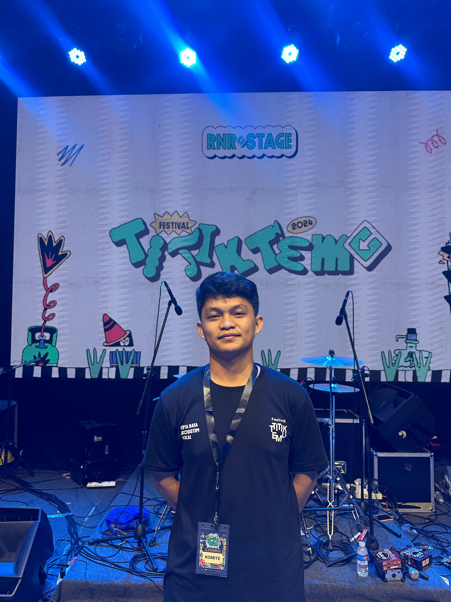

Proyek Saya

Desain Poster UMKM
Membuat poster pedagang kaki lima yang jualan jagung bakar dengan slogan di bakar dengan cinta di nikmati dengan cerita
Fotografer
Menggunakan jasa sebagai foto grafer, kadang di indor juga outdoor

Marketing
Disini saya sebagai tim marketing di suatu CV di kota palu, selalu bekerja sama dalam tim, dan saling percaya satu sama lain.

Temu Stage
Disini saya bekerja sebagai Temu Stage di salah satu Event Festival yang sedang di selenggarakan di Kota Palu.